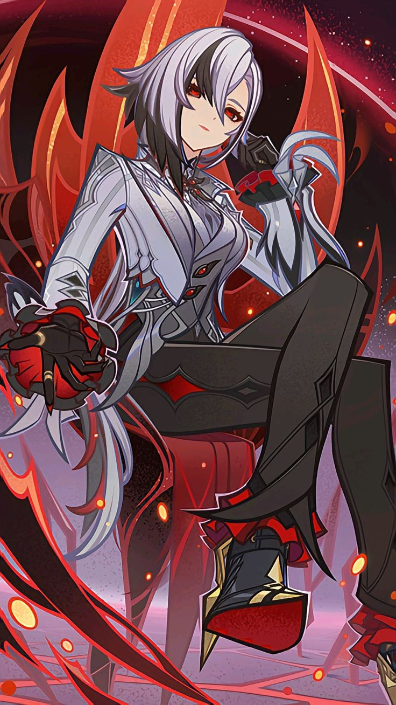
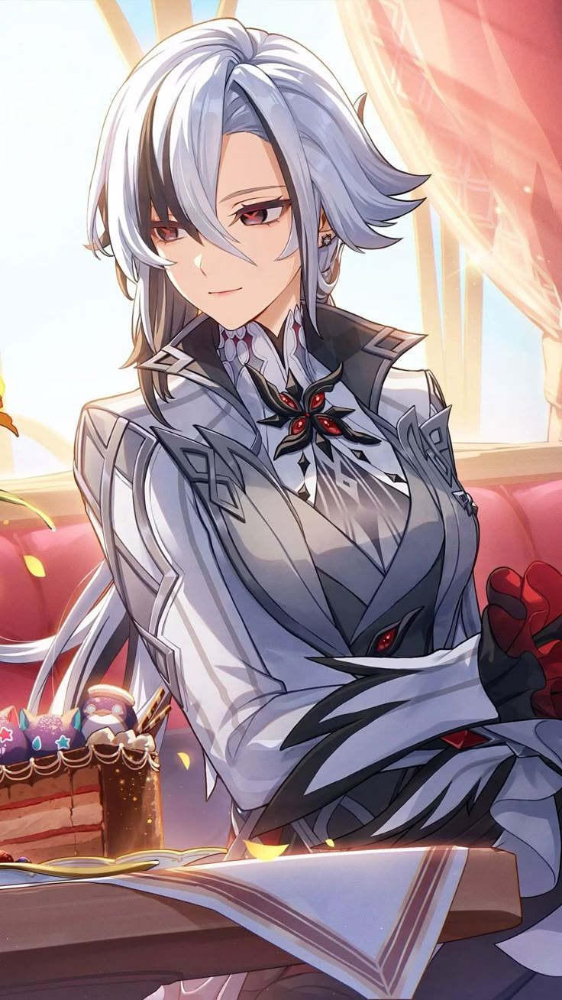
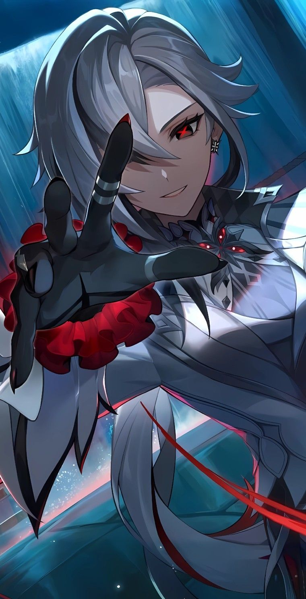
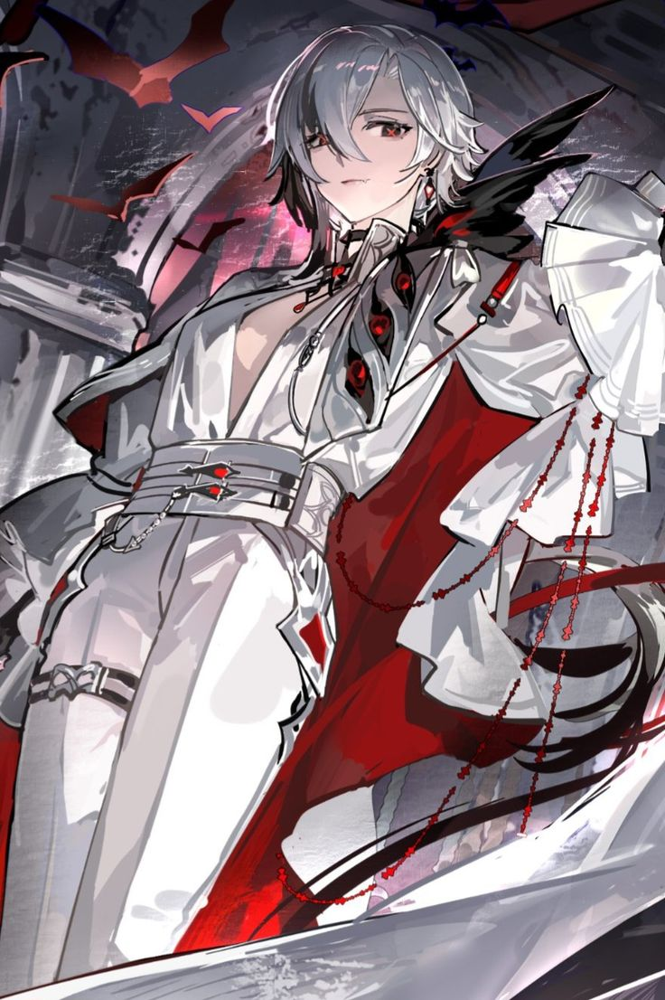
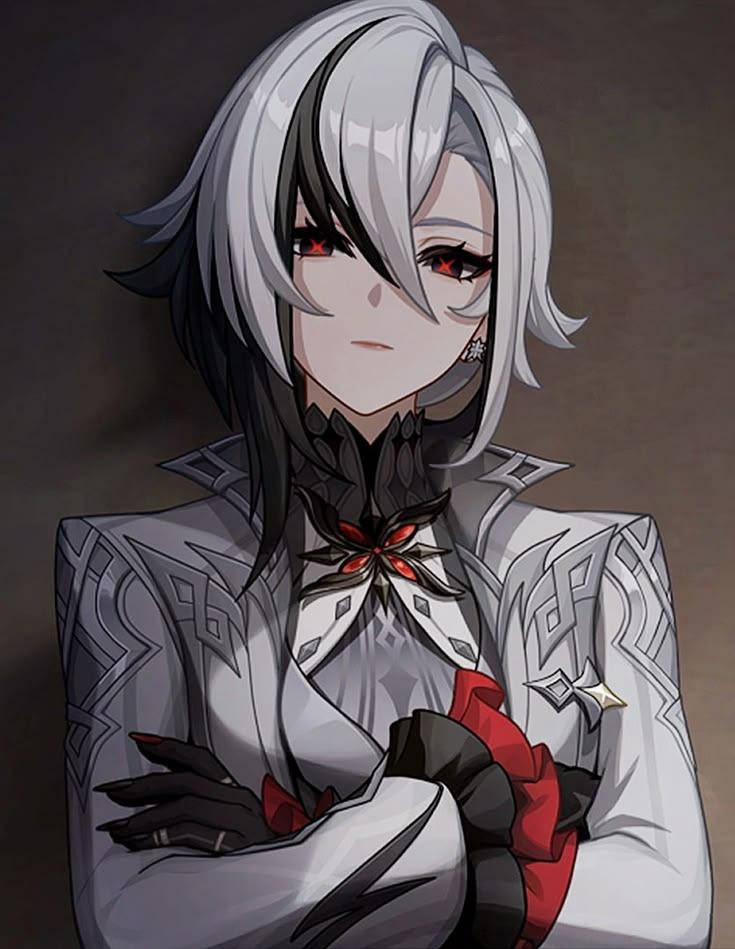
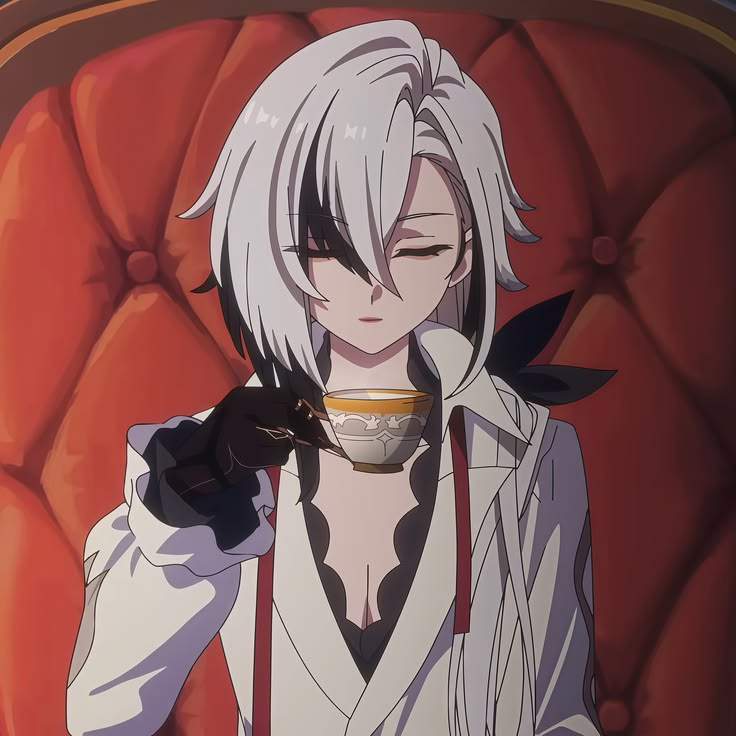
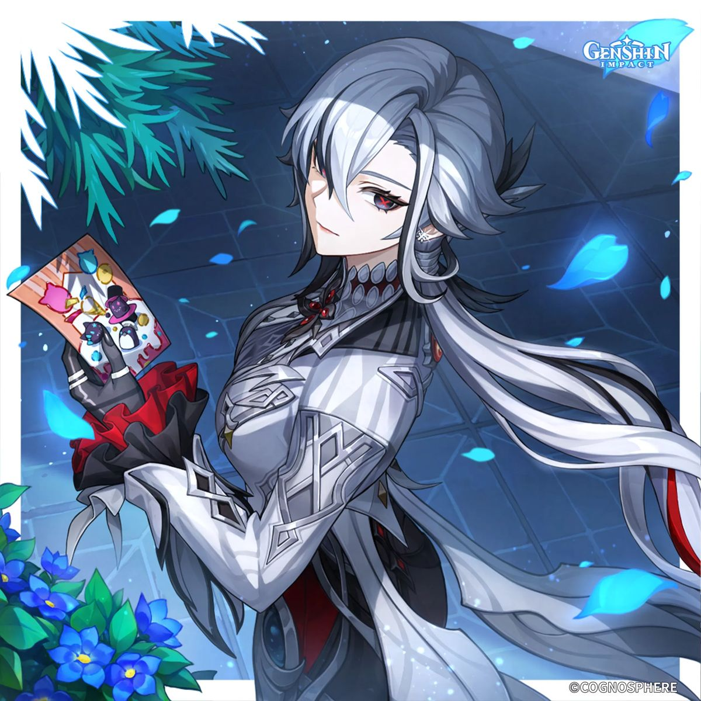
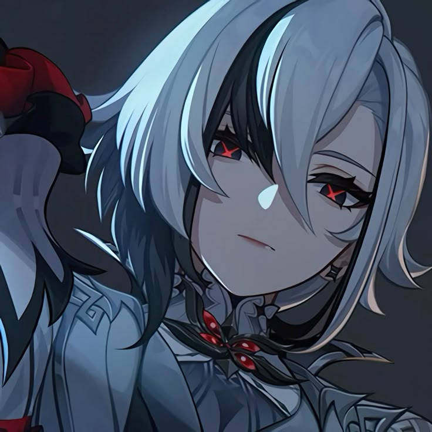

Replace all of the images with images of your choice and appropriate captions. Include two paragraphs about the contents of your site. Do not remove the skip to top link.
Arlecchino, known as The Knave, is Fourth of the Fatui Harbingers from the RPG game Genshin Impact. Her base of operations remains in Fontaine, a nation under the hydro archon Furina.
She is the leader of the House of the Hearth which is an orphanage, which masks its purpose as an intelligence network and recruitment site for spies and operatives.
Not acting in a hostile way, their intentions remain neutral yet suspicious, but her actions speak towards both personal gain as well as help for those who need it.
In the House of the Hearth, she is known by all the children as Father, with all of them addressing her like so. This is contradictory to her past experience as one of the children of
the previous leader of the House of the Hearth. Likewise, the previous leader was one of the Fatui Harbingers of which Arlecchino took her place. She was known as Mother, and despite
this notion, is strict and unfeeling masked by a deceptice sweet and motherly demeanor. With this, Arlecchino takes it upon herself to present herself in a contrasting way, being truly
caring and loving masked by a stony and cold exterior. After a duel between a younger Arlecchino, defeating the previous harbinger, she was sent to Snezhnaya to be imprisoned
but given another chance by the Tsaritsa to instead rise into the ranks of the Harbingers as the new Knave.







